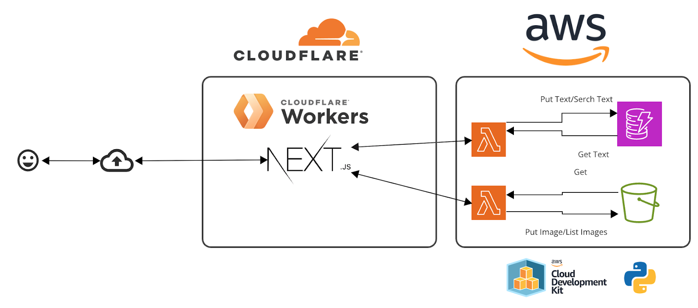
Last Updated: 2024-12-29
テキストを入力、画像をアップロードするとAWSのDynamoDB（NoSQLデータベース）に書き込む、S3（ストレージ）に書き込みます。
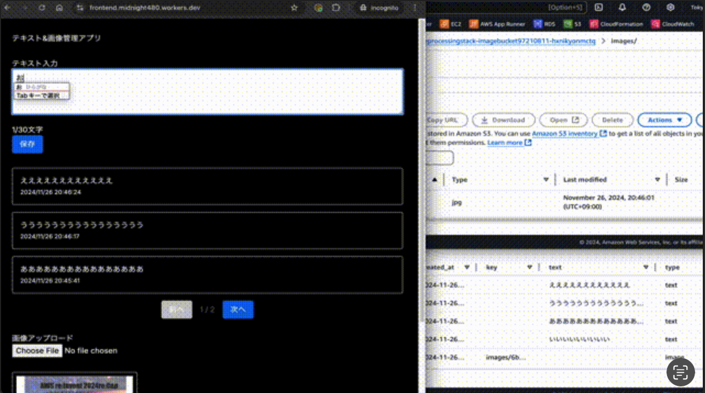
GitHubに利用するソースコードを置いているので、
以下のいずれかの方法で取得してください。
GitHubにSSH認証を設定済みの方
Gitコマンドで取得してください
git clone git@github.com:midnight480/saga-it-community-day-handson-1.gitGitHubにアカウントを取得済みの方
Gitコマンドで取得してください
git clone https://github.com/midnight480/saga-it-community-day-handson-1.gitGitHubにアカウントをお持ちでない方
WebブラウザのURL欄に貼り付けてダウンロードしてZIPを解凍してください。
https://github.com/midnight480/saga-it-community-day-handson-1/archive/refs/heads/master.zip
AdministratorAccess（AWS提供ポリシー）を付与したユーザを作成、アクセスキーとシークレットアクセスキーを払い出します。
左上の窓に 「IAM」を入力
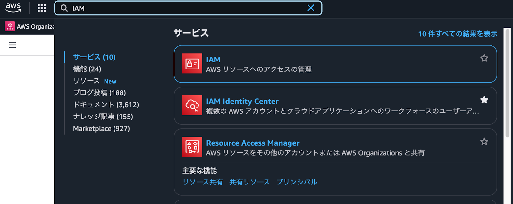
右上にある「ユーザの作成」
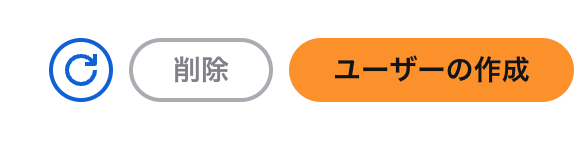
ユーザ名「sitcd」
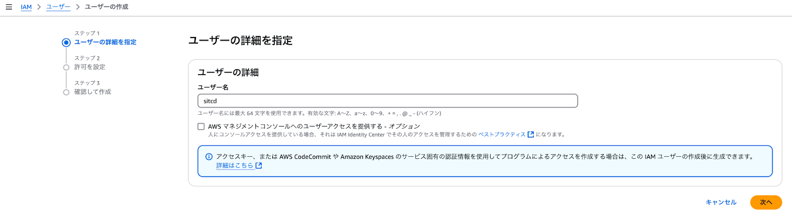
「ポリシーを直接アタッチする」を選択して、「AdministratorAccess」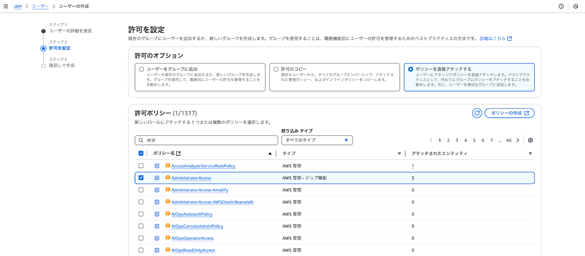
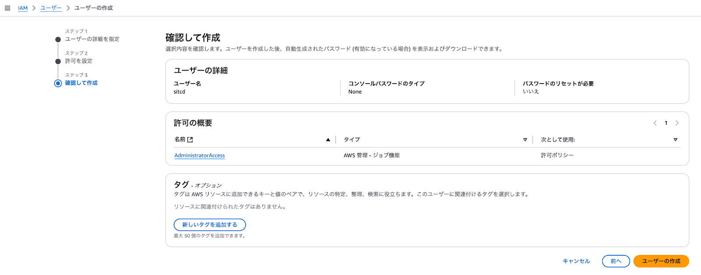
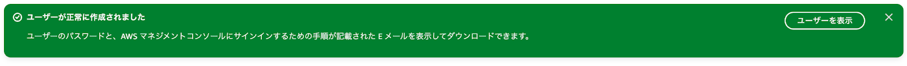
作成したIAMユーザ「sitcd」を押して「セキュリティ認証情報」
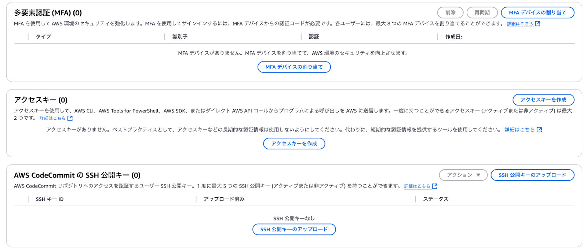
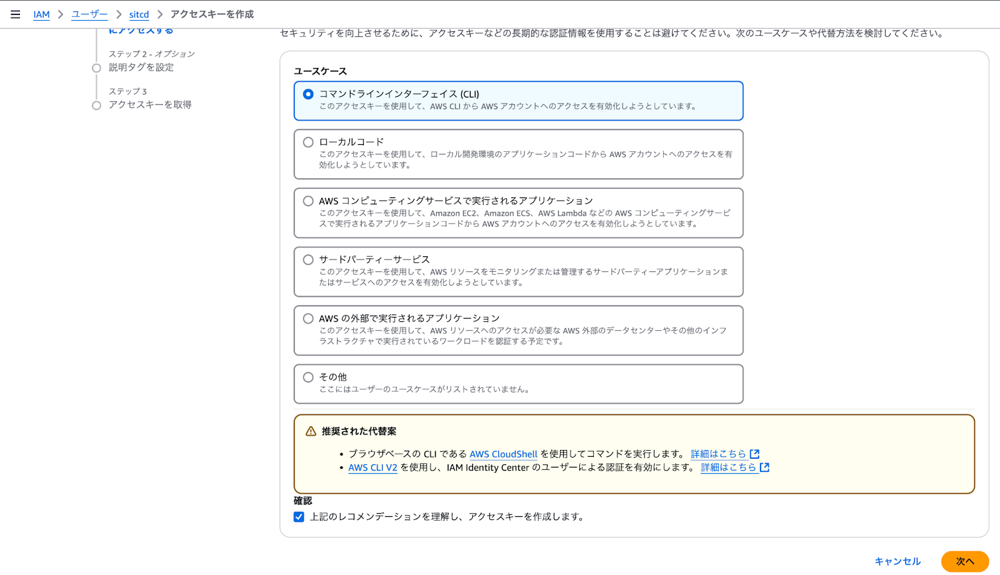
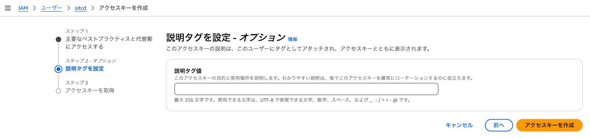
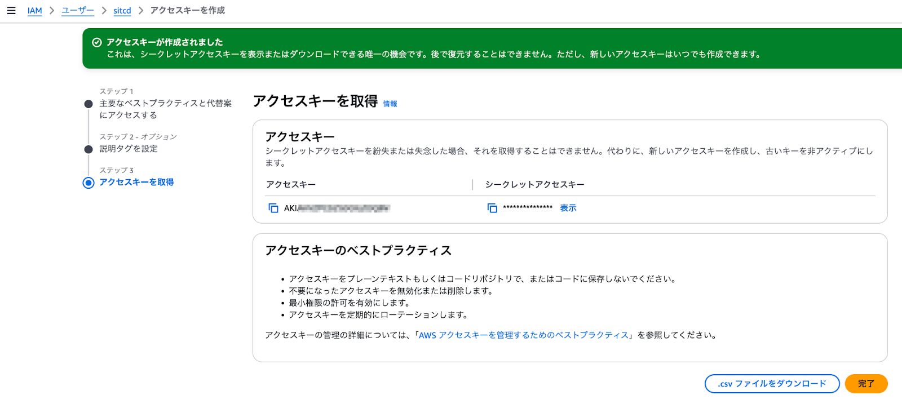
以降は、GitHubから取得した README.md ファイルにもコマンドを記載している内容のため、
AWS CLIで取り扱う上で、プロファイルを用いることでAWSアカウント、IAMユーザごとに設定が可能なので設定します。
AWS CDKでは初期設定（S3に状態管理ファイル、構成ファイルを配置）が必要なため実施します。
$ cdk bootstrap --profile sitcd
⏳ Bootstrapping environment aws://{AccountNumber}/ap-northeast-1...
Trusted accounts for deployment: (none)
Trusted accounts for lookup: (none)
Using default execution policy of 'arn:aws:iam::aws:policy/AdministratorAccess'. Pass '--cloudformation-execution-policies' to customize.
✅ Environment aws://{AccountNumber}/ap-northeast-1 bootstrapped (no changes).
(.venv) AWS CDKでリソースを作成します。
「--force」をオプションを付けているのでリソース作成まで完了します。
$ cdk deploy --profile sitcd --force
✨ Synthesis time: 2.96s
ImageProcessingStack: start: Building
...
ImageProcessingStack: deploying... [1/1]
ImageProcessingStack: creating CloudFormation changeset...
✅ ImageProcessingStack
✨ Deployment time: 24.16s
Outputs:
ImageProcessingStack.ImageFunctionUrl = https://XXX.lambda-url.ap-northeast-1.on.aws/
ImageProcessingStack.TextFunctionUrl = https://XXX.lambda-url.ap-northeast-1.on.aws/
Stack ARN:
arn:aws:cloudformation:ap-northeast-1:{AccountNumber}:stack/ImageProcessingStack/aaa
✨ Total time: 27.12s
(.venv)
まずはローカルで動作確認します
.env.local を作成したうえで、Frontendの作業を進めます。
$ npm run preview:worker
> frontend@0.1.0 preview:worker
> npm run build:worker && npm run dev:worker
> frontend@0.1.0 build:worker
> cloudflare
Building the Next.js app in the current folder (xxx)
▲ Next.js 14.2.5
- Environments: .env.local
Creating an optimized production build ...
...
○ (Static) prerendered as static content
⚙️ Copying files...
# copyPrerenderedRoutes
# copyPackageTemplateFiles
⚙️ Bundling the worker file...
# patchWranglerDeps
# updateWebpackChunksFile
- chunk 347.js
- chunk 682.js
- chunk 948.js
# patchRequire
# patchReadFile
# inlineNextRequire
# patchFindDir
# inlineEvalManifest
# patchCache
# inlineMiddlewareManifestRequire
# patchExceptionBubbling
Worker saved in `xxx/frontend/.worker-next/index.mjs` 🚀
> frontend@0.1.0 dev:worker
> wrangler dev --port 8771
⛅️ wrangler 3.90.0 (update available 3.99.0)
-------------------------------------------------------
Your worker has access to the following bindings:
- KV Namespaces:
- NEX_CACHE_SAGA_ITL: xxxxxxxxxxxxxxxxxxxxxxxx (local)Webブラウザが起動してCloudflareにログインが求められるのでログインしてください。
そのあと、WorkersとWranglerの認証設定が尋ねられます。
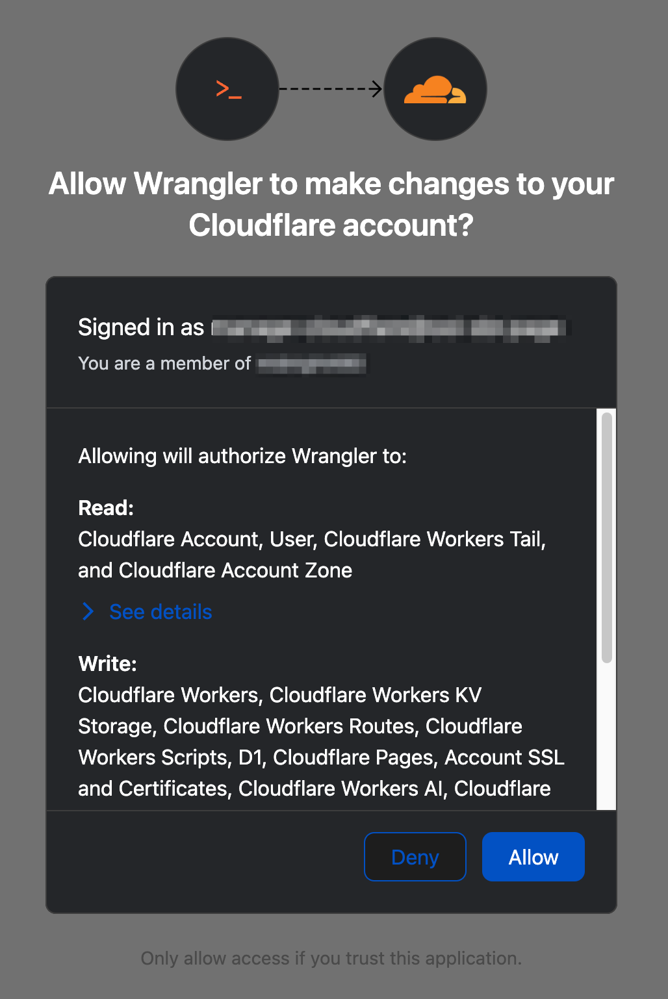
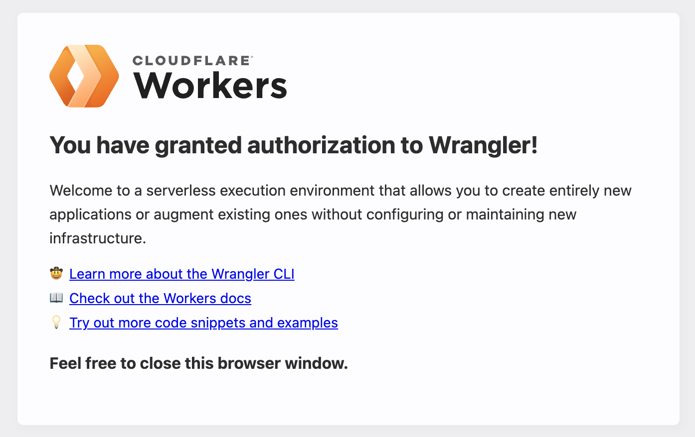
$ npm run deploy:worker
> frontend@0.1.0 deploy:worker
> npm run build:worker && wrangler deploy
> frontend@0.1.0 build:worker
> cloudflare
Building the Next.js app in the current folder (/Users/tetsuya/src/handson-1/frontend)
▲ Next.js 14.2.5
- Environments: .env.local
Creating an optimized production build ...
...
✔ Would you like to continue? ... yes
🌀 Building list of assets...
🌀 Starting asset upload...
🌀 Found 4 new or modified static assets to upload. Proceeding with upload...
+ /cdn-cgi/_cf_seed_data/index.meta
+ /cdn-cgi/_cf_seed_data/index.html
+ /cdn-cgi/_cf_seed_data/favicon.ico.meta
+ /cdn-cgi/_cf_seed_data/index.rsc
Uploaded 1 of 4 assets
Uploaded 3 of 4 assets
Uploaded 4 of 4 assets
✨ Success! Uploaded 4 files (27 already uploaded) (1.35 sec)
Total Upload: 5373.47 KiB / gzip: 1389.41 KiB
Worker Startup Time: 33 ms
Uploaded sitcd (26.03 sec)
Deployed sitcd triggers (3.92 sec)
https://sitcd.xxx.workers.dev
Current Version ID: xxx稼働中のCloudflare Workersを削除します。
次のように表示されたら削除できています。
$ npm run delete:worker
> frontend@0.1.0 delete:worker
> wrangler delete
⛅️ wrangler 3.90.0 (update available 3.99.0)
-------------------------------------------------------
✔ Are you sure you want to delete sitcd? This action cannot be undone. ... yes
Successfully deleted sitcd稼働中のLambda、DynamoDB、S3のリソースを削除します。
次のように表示されたら削除できています。
$ cdk destroy --profile sitcd
Are you sure you want to delete: ImageProcessingStack (y/n)? y
ImageProcessingStack: destroying... [1/1]
✅ ImageProcessingStack: destroyed
(.venv)